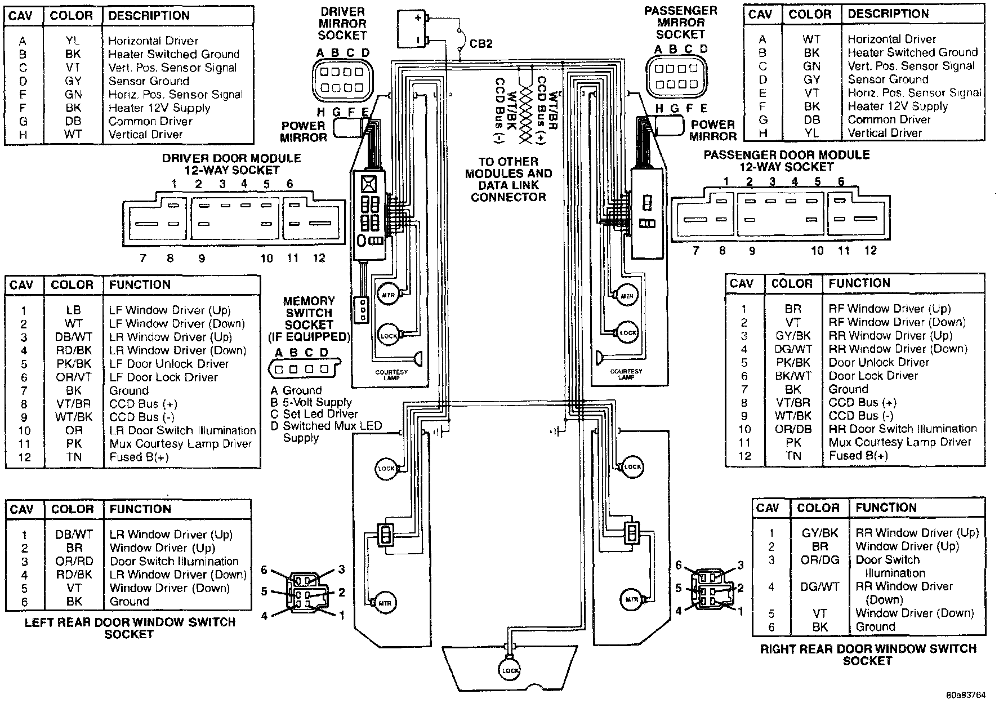
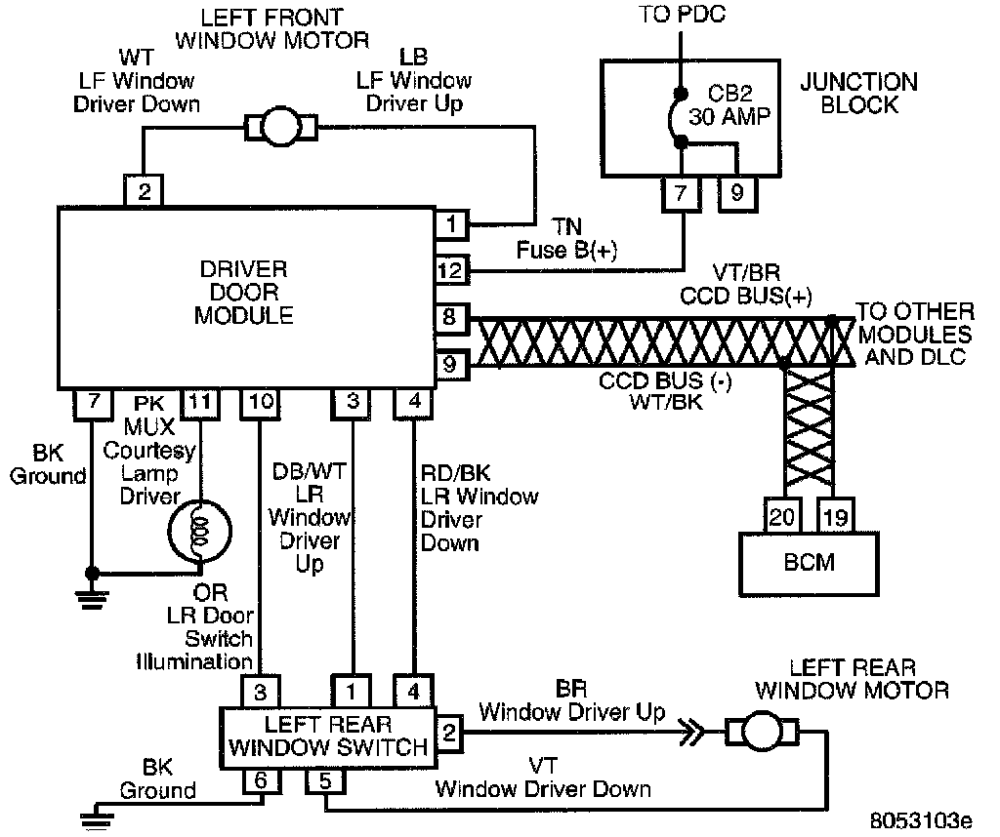
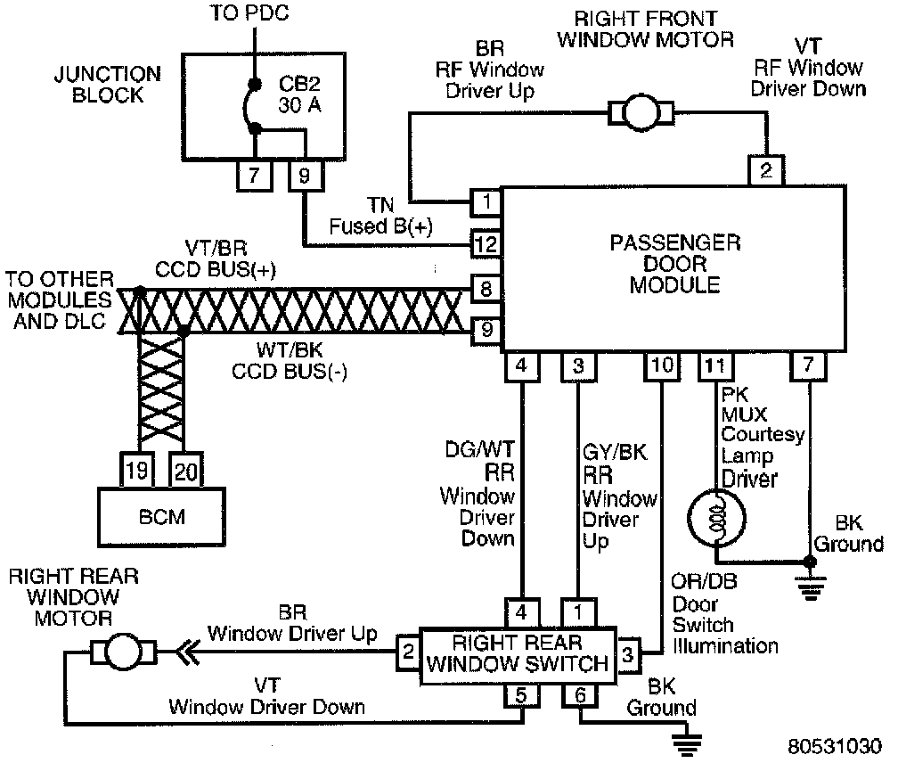

Operation CHARM
: Car repair manuals for everyone.
Русский
Home
>>
Jeep
>>
1997
>>
Grand Cherokee 4WD L6-4.0L VIN S
>>
Repair and Diagnosis
>>
Windows and Glass
>>
Relays and Modules - Windows and Glass
>>
Power Window Control Module
>>
Diagrams
>>
Electrical Diagrams
Electrical Diagrams
Door Modules:

Driver Door Module (Power Windows):

Passenger Door Module (Power Windows):
